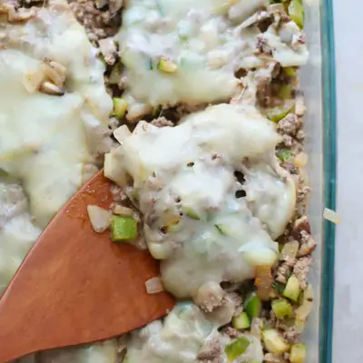

Philly Cheese Steak Casserole

Ingredients
- 2 pounds lean ground beef
- 1 teaspoon olive oil
- 1 green bell pepper, diced
- 1 medium zucchini, diced
- 1 medium yellow onion, diced
- 8 ounces crimini mushrooms, diced
- 1 1/2 teaspoon smoked paprika
- 1 teaspoon garlic powder
- 2 teaspoons Italian seasoning
- 1/2 teaspoon salt (optional)
- 3/4 cup Greek yogurt (or 6 ounces softened cream cheese)
- 1 cup shredded mozzarella (optional)
- 8 slices provolone cheese
Steps
- Preheat oven to 350°F. Heat a large skillet over medium-high heat. Add the ground beef and break it up into crumbles as it cooks. once the beef is cooked, carefully remove it from the pan and use a paper towel to wipe away any excess grease remaining in the skillet.
- Add oil and and cook all the vegetables over medium-high heat until they begin to soften, about 5 minutes. Stir in the seasonings. Add back the beef and combine.
- Turn off the heat and stir in cream cheese or yogurt. Add the optional mozzarella cheese.
- Transfer the mixture to a 9x13 baking dish. Top the casserole evenly with provolone cheese.
- Bake for 10-15 minutes until the cheese has melted.
Recipe by Min Kwon · Kidfriendly Meals, from MJ and Hungryman. Saved here for personal use; the original has the full notes, tips and photos. Open original